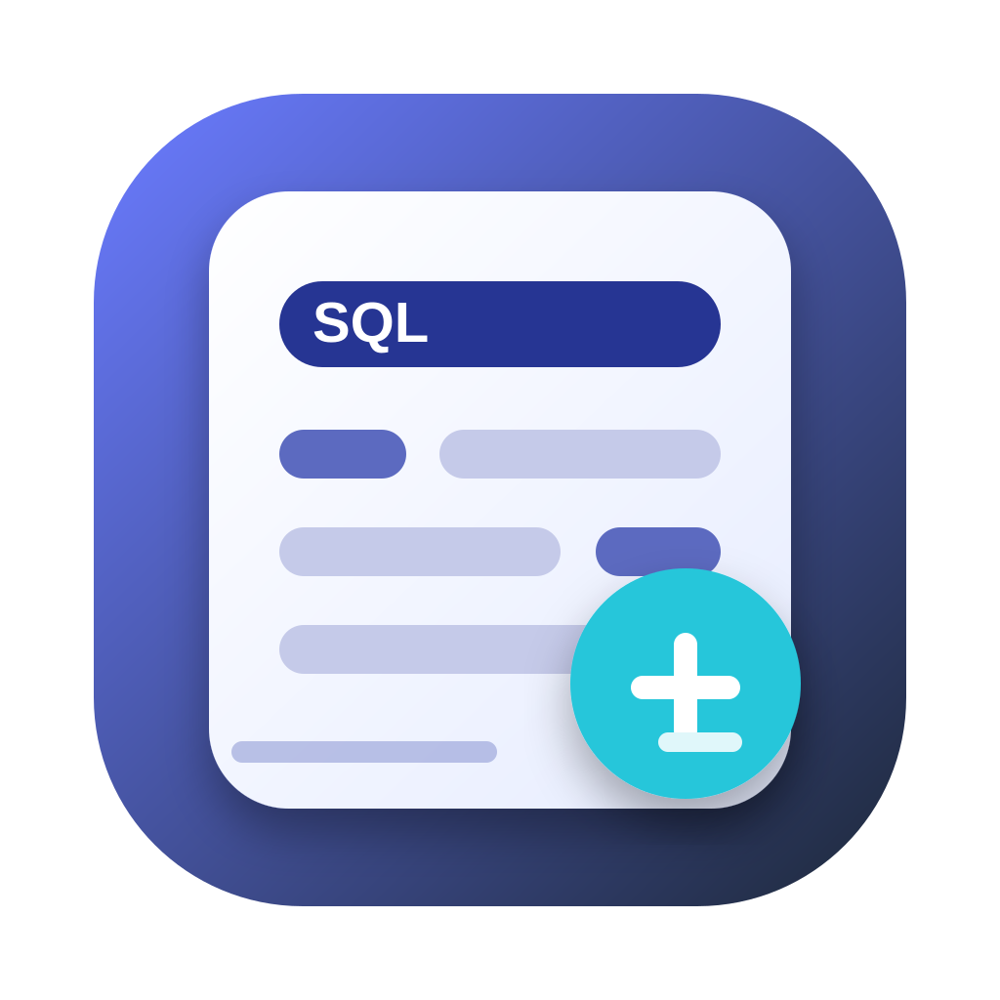
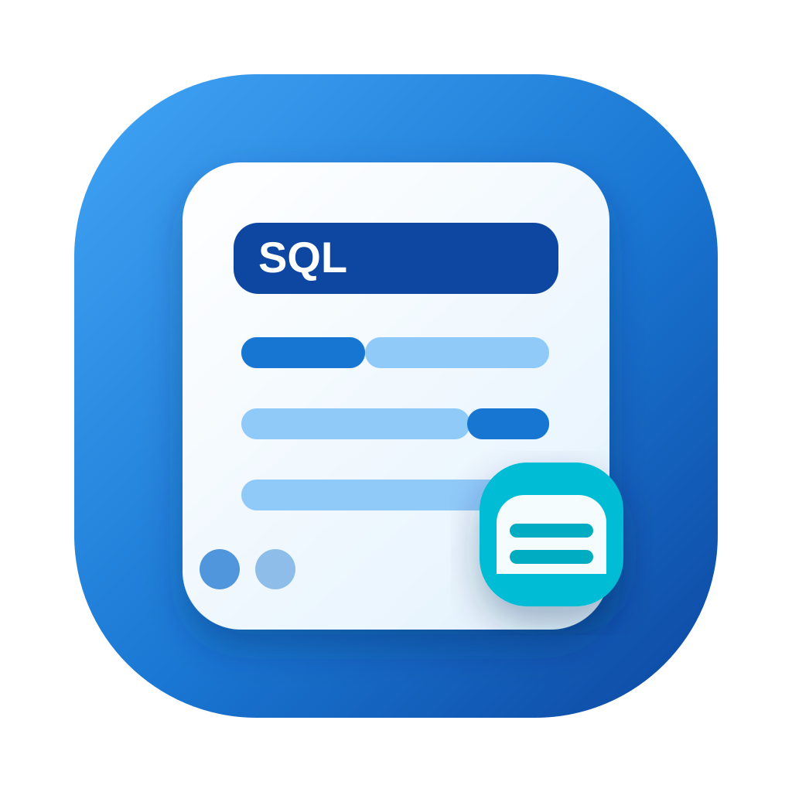
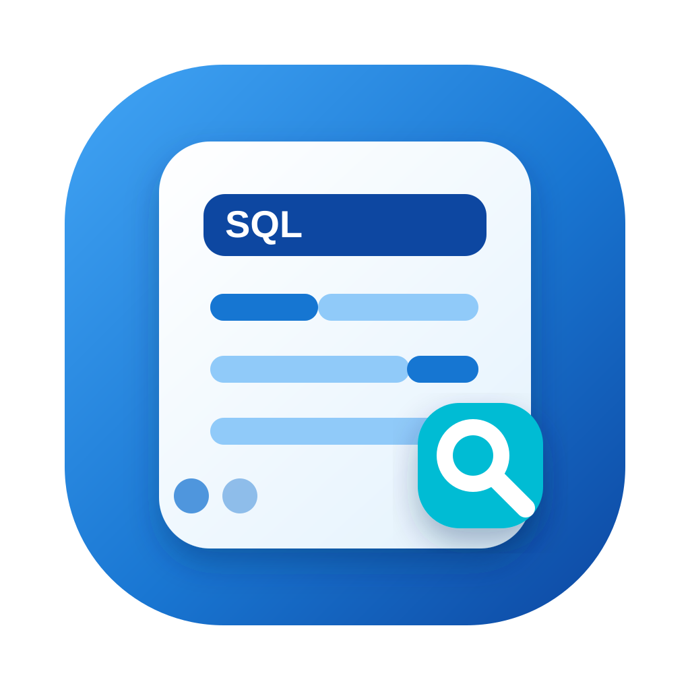
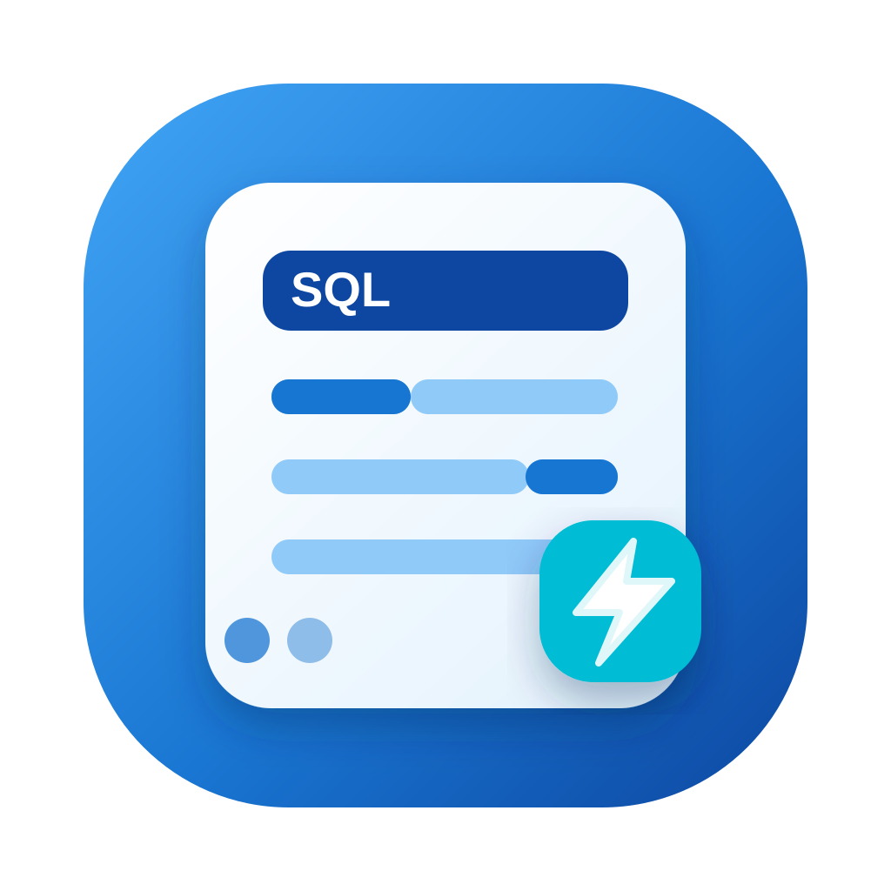
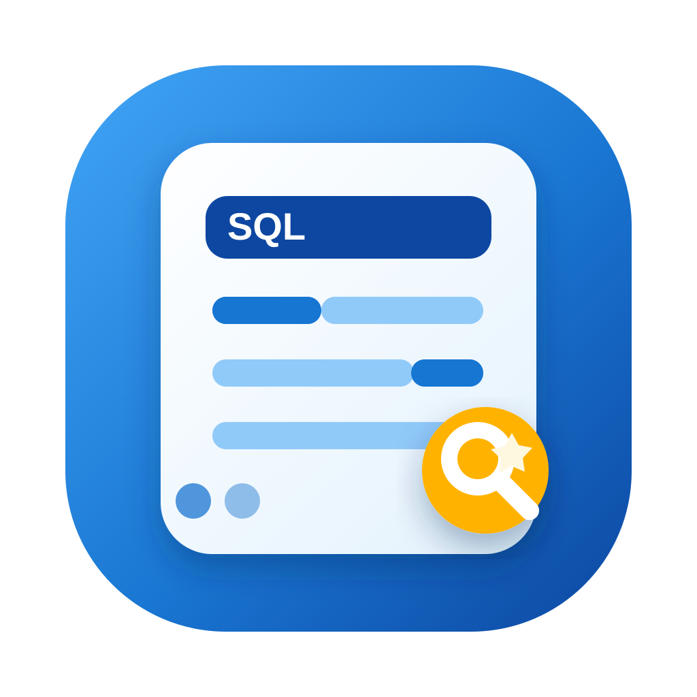
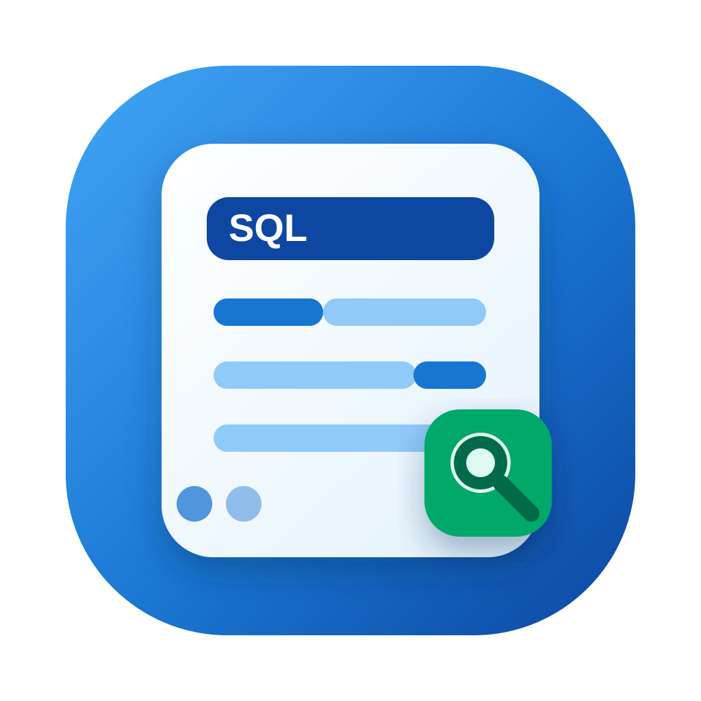
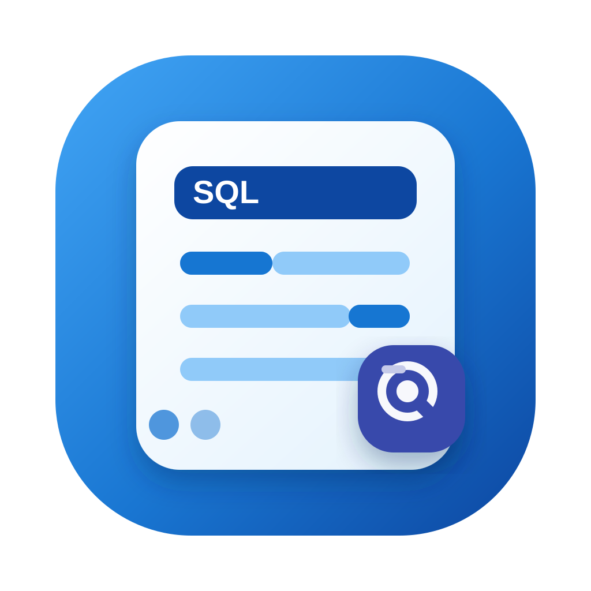
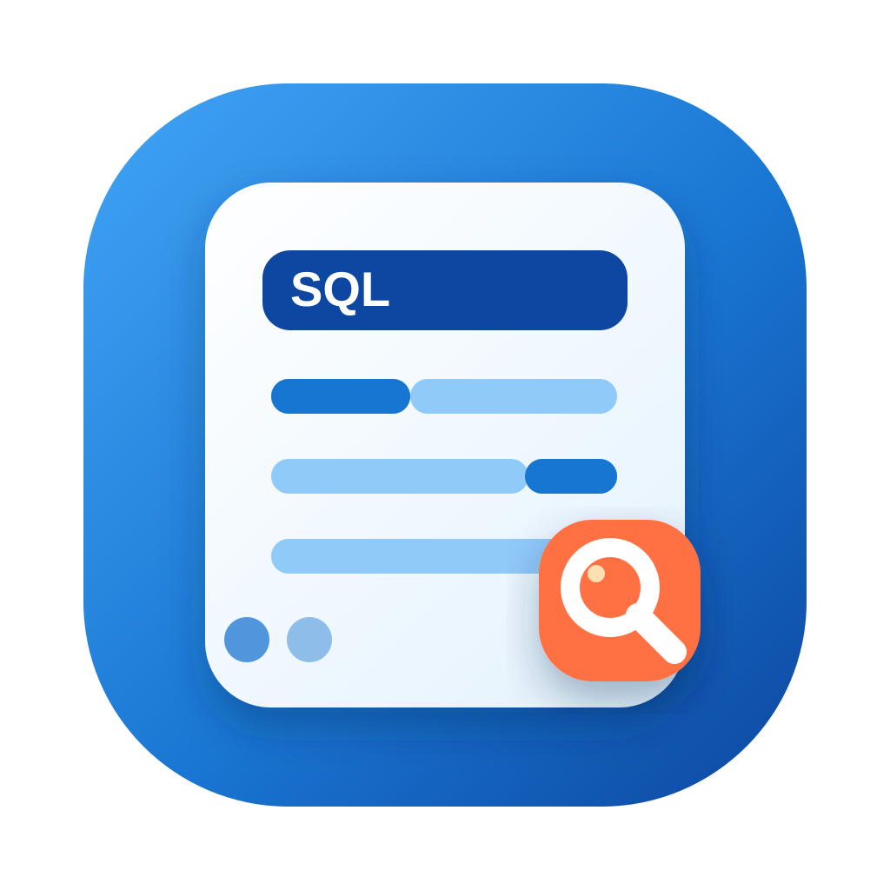
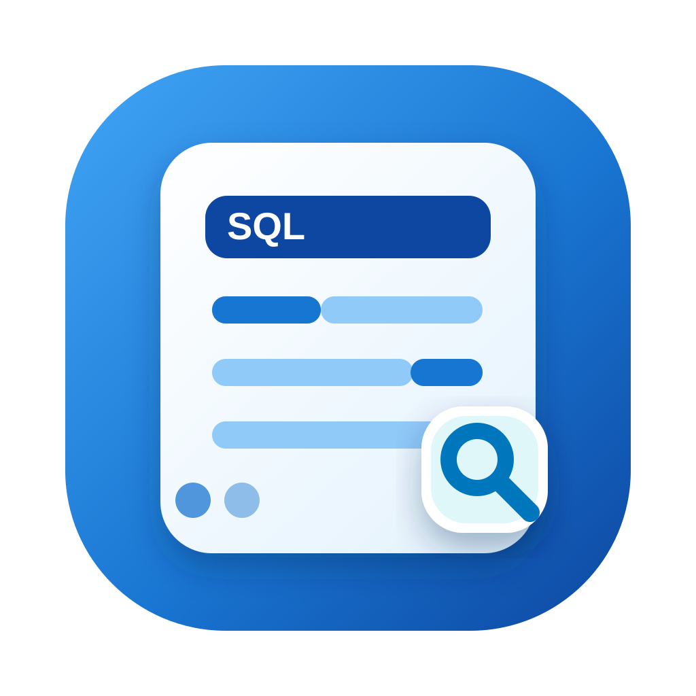
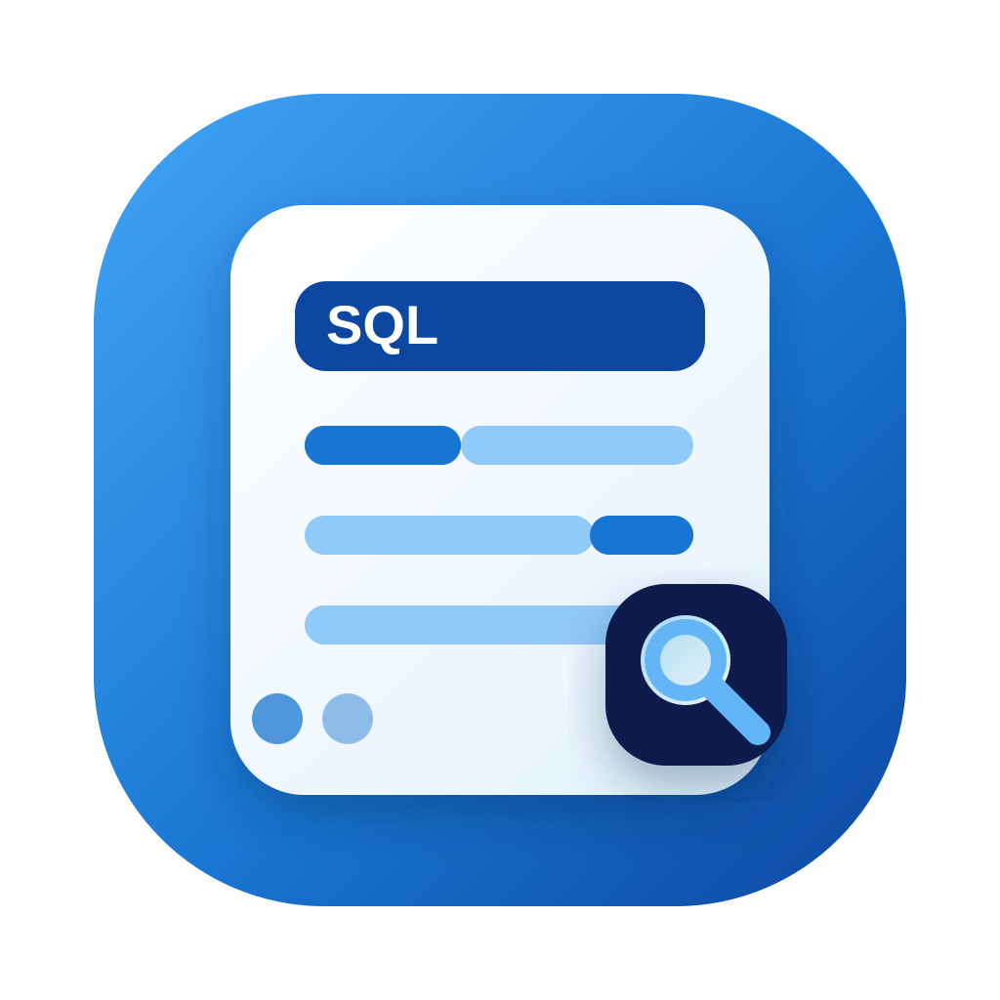

05 数据库检索 · 紧凑版
延续 01 的数据库 + 放大镜，图形更集中，适合小尺寸应用图标。
06 数据库检索 · 圆角版
更圆润的整体轮廓，保留数据库检索语义，视觉更现代。

07 SQL 面板 · 增强版
延续 03 的 SQL 面板风格，右下角操作符强调编辑和数据管理。

08 SQL 面板 · 蓝色卡片版
蓝色主背景，SQL 面板 + 数据卡片，右下角保留数据卡片小图标。

09 SQL 面板 · 搜索角标
右下角改成放大镜，强调查看、搜索和浏览数据库内容。

10 SQL 面板 · 闪电角标
右下角改成闪电，强调快速打开、快速查询和工具效率。
11 SQL 面板 · 表格角标
右下角改成表格，强调数据表浏览和 SQLite 表格编辑。

12 SQL 面板 · 琥珀搜索
保留放大镜语义，改为暖色圆形角标，视觉更醒目。

13 SQL 面板 · 绿色搜索
绿色角标搭配轻量放大镜，偏数据通过、可用状态的感觉。

14 SQL 面板 · 靛蓝搜索
深靛蓝小角标 + 简化镜头，整体更偏专业工具风格。

15 SQL 面板 · 珊瑚搜索
珊瑚色角标增强对比，适合需要更活跃视觉的版本。

16 SQL 面板 · 白色搜索
浅色角标与深色主体形成强对比，小尺寸下更清晰。

17 SQL 面板 · 海军蓝搜索
深蓝角标保持同色系，整体统一，适合作为稳重版候选。